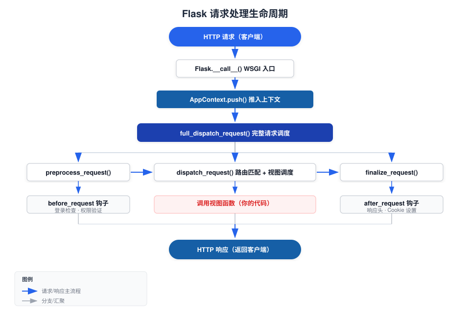

Flask Request Lifecycle
Understanding the complete lifecycle of a Flask request is key to writing good Flask applications.
This chapter breaks down the entire process of an HTTP request from entering the server to returning a response at the source code level, helping you build a clear execution model.
What is the request lifecycle
Request lifecycle refers to the complete processing that an HTTP request goes through inside Flask.
It includes the following stages:Receive request → Create context → Preprocess → Route dispatch → Execute view → Build response → Clean up context → Return response。
By understanding this process, you can correctly answer the following questions:
- gWhen does the object's data become available? When is it cleaned up?
- before_requestandafter_requestWhat is the execution order?
- When an exception occurs, which handling stages does it pass through in sequence?
- Why use [it] outside the view functionrequestWill it throw an error?
Complete flowchart
The following diagram shows the complete call chain from Flask receiving a request to returning a response:

Step-by-step detailed explanation
Stage 1: WSGI Entry
When an HTTP request arrives at the server, the WSGI server (such as Gunicorn, Werkzeug development server) calls the Flask application instance.
Flask implements__call__method, making it a valid WSGI application:
Example
# The WSGI server will call your application like this:
# response = app(environ, start_response)
class Flask(App):
def __call__(self, environ, start_response):
"""Entry point called by the WSGI server"""
return self.wsgi_app(environ, start_response)
def wsgi_app(self, environ, start_response):
"""The actual WSGI handling logic"""
# Step 1: Create request context based on environ
ctx = self.request_context(environ)
try:
ctx.push() # Push onto context stack
response = self.full_dispatch_request(ctx) # Full dispatch
except Exception as e:
response = self.handle_exception(ctx, e) # Exception fallback
finally:
ctx.pop(error) # Pop the context and perform cleanup
return response(environ, start_response)
Flask designs the entry point as callingwsgi_appmethod, rather than directly writing__call__logic inside. This way you can replaceapp.wsgi_appto insert middleware, without affectingappcalling the instance itself.
Stage 2: Create Context
request_context(environ)Create one based on the WSGI environment variablesAppContextObject.
This object contains all the information about the current request. Once it is pushed onto the stack,request、session、g、current_appthese global proxies begin pointing to the data of the current request.
Example
from flask import Flask, request, current_app
app = Flask(__name__)
with app.app_context():
# Only the application context is available — current_app is usable, request is not.
print(current_app.name) # ✓ OK
# print(request.method) # ✗ Error: Working outside of request context
with app.test_request_context("/hello?name=example"):
# The request context also includes the application context — both are available.
print(current_app.name) # ✓ Outputs app name
print(request.path) # ✓ Outputs /hello
print(request.args["name"]) # ✓ Outputs example
| Context Type | When Created | When Destroyed | Available global variables |
|---|---|---|---|
| Application Context | When a request arrives / Manually with app.app_context() | End of request / exit of the with block | current_app, g |
| Request context | When request arrives / manually with app.test_request_context() | End of request / exit of the with block | request, session (all variables in the application context) |
The most common mistake beginners make is accessing directly at the module levelrequest. Remember:requestIt only exists within the request context. You can only access it inside view functions (or functions they call).
Phase 3: preprocess_request (Preprocessing)
Once the context is ready,full_dispatch_requestFirst, callpreprocess_request。
This stage executes all code registered with@app.before_requestregistered functions.
If any onebefore_requestfunction returns a non-Nonevalue, Flask treats it as the final response and skips the execution of subsequent view functions.
Example
app = Flask(__name__)
app.secret_key = "dev-secret"
@app.before_request
def check_authentication():
"""Check whether the user is logged in before each request"""
# Skip authentication checks for login and registration pages
if request.endpoint in ("login", "register", "static"):
return None # None means continue with normal flow
# If not logged in, directly return a redirect response (skip the view function)
if "username" not in session:
return redirect(url_for("login"))
# User is logged in, continue normally
return None
@app.route("/login", methods=["GET", "POST"])
def login():
if request.method == "POST":
session["username"] = request.form["username"]
return redirect(url_for("dashboard"))
return '<form method="post"><input name="username"><input type="submit"></form>'
@app.route("/register")
def register():
return "Registration page (no login required)"
@app.route("/dashboard")
def dashboard():
return f"Welcome {session['username']} to EXAMPLE console"
Phase 4: dispatch_request (Route Dispatching)
After preprocessing is complete, Flask enters the core dispatch stage:
- Match the URL to the corresponding route rule (Rule）
- Extract variable parameters from the URL (view_args）
- Call the corresponding view function, passing in the extracted parameters
Example
def dispatch_request(self, ctx):
req = ctx.request
# Get the matched routing rule (Rule object)
rule = req.url_rule
# Get variable parameters from the URL. For example /post/42 → {"post_id": 42}
view_args = req.view_args
# Find the corresponding function in the view_functions dictionary and call it
return self.view_functions[rule.endpoint](**view_args)
When matching fails, it throwsRoutingException, and it is eventually caught by the error handler and returns 404.
Stage 5: View Function Execution
This is where you write your business logic. Flask calls your view function and obtains the return value.
The return value can be of many types—strings, dicts, tuples, Response objects—all of which are handled uniformly in the next stage.
Phase 6: finalize_request (Response Construction)
After the view function finishes execution,finalize_requestresponsible for converting the return value into a standardResponseObject:
Example
def finalize_request(self, ctx, rv):
# 1. Call make_response to convert various types of return values into Response objects
response = self.make_response(rv)
# 2. Execute after_request hooks via process_response
response = self.process_response(ctx, response)
# 3. Sending signal: request_finished
request_finished.send(self, response=response)
return response
make_responseconversion rules:
| Return value type | Conversion method |
|---|---|
| str / bytes | As response body, Content-Type: text/html |
| dict / list | Call jsonify(), Content-Type: application/json |
| tuple | Interpreted as (body, status) or (body, headers) |
| Response object | Used directly |
| iterator / generator | as a streaming response |
Phase 7: after_request Hook
process_responseDuring executionmake_responseAfterwards, it calls all registered@app.after_requestregistered functions.
eachafter_requestfunctions receive and returnResponseobject, you can modify response headers, add cookies, and so on.
Example
@app.after_request
def add_security_headers(response):
response.headers["X-Content-Type-Options"] = "nosniff"
response.headers["X-Frame-Options"] = "DENY"
response.headers["X-XSS-Protection"] = "1; mode=block"
return response # Must return a response object
# Also commonly used to add CORS headers
@app.after_request
def add_cors_headers(response):
response.headers["Access-Control-Allow-Origin"] = "*"
response.headers["Access-Control-Allow-Methods"] = "GET, POST, PUT, DELETE"
return response
Stage 8: Context Cleanup
After the response is sent,finallyin the blockctx.pop()Perform context cleanup:
- call allteardown_requestfunctions registered with (executed regardless of request success or failure)
- call allteardown_appcontextregistered functions
- sendrequest_tearing_downandappcontext_tearing_downsignal
- releasegall data stored in the object
Example
@app.teardown_appcontext
def close_database_connection(error):
"""Ensure the database connection is closed even if the request fails"""
db = g.pop("db", None)
if db is not None:
db.close()
# error parameter: if an exception occurs during the request, it will be received here
if error:
app.logger.warning(f"Request exception, database connection closed: {error}")
# Difference between teardown and after_request
@app.after_request
def after(response):
# after_request runs in the normal flow, not when an exception occurs
# Used to modify successful responses
return response
@app.teardown_request
def teardown(error):
# teardown always runs — whether the request succeeds or fails
# Used to clean up resources (close files, release locks, etc.)
pass
exception handling flow
When a view function raises an exception, Flask has a dedicated exception handling path:
- full_dispatch_requestCatch exceptions
- Callhandle_user_exceptiondetermine the exception type
- HTTP exceptions (such asabort(404)) → find the correspondingerrorhandler
- normal exception → find the exception class'serrorhandler
- no handler found → callhandle_exception, return a 500 error
- Regardless of exceptions, it will ultimately go throughfinalize_requestBuild response
Key points in the exception path:after_requestHooks also execute for error responses (since Flask 1.1), butbefore_requestA non-None value returned from it short-circuits the entire flow; subsequent view functions and hooks will not execute.
hook function quick reference
| Hook | Registration method | Execution timing | Typical use |
|---|---|---|---|
| before_request | @app.before_request | before route dispatch | login checks, request logs, permission verification |
| before_first_request | @app.before_request (deprecated) | Before the first request (only once) | Initialization operations (it is recommended to use the factory pattern instead) |
| after_request | @app.after_request | After the response is built, before sending | Add response headers, CORS, logs |
| teardown_request | @app.teardown_request | When the request context is popped (always executed) | Release resources, close files |
| teardown_appcontext | @app.teardown_appcontext | When the application context is popped (always executed) | Close database connections, clear cache |
| errorhandler | @app.errorhandler(code) | When the corresponding error code/exception occurs | custom error pages |
Signal event
Flask usesblinkerThe library sends signals at key points:
Example
app = Flask(__name__)
# Connect signal — record when the request arrives
@signals.request_started.connect_via(app)
def log_request_start(sender, **extra):
print("Request started")
# Connect signal — record when the request completes
@signals.request_finished.connect_via(app)
def log_request_end(sender, response, **extra):
print(f"Request finished, response status code: {response.status_code}")
# Connect signal — catch exceptions
@signals.got_request_exception.connect_via(app)
def log_exception(sender, exception, **extra):
print(f"Exception occurred during request: {exception}")
| signal | Trigger timing |
|---|---|
| request_started | After the request context is established, before preprocessing |
| request_finished | After response construction completes, before sending |
| got_request_exception | When an exception occurs during request processing |
| request_tearing_down | When the request context is destroyed |
| appcontext_pushed | When the application context is pushed onto the stack |
| appcontext_popped | When the application context is popped from the stack |
| message_flashed | when calling flash() |
| template_rendered | when template rendering succeeds |
key points summary
Core rules: In a complete request lifecycle,before_request → View function → after_request → teardownThese four nodes are guaranteed to execute in order (teardown always executes, regardless of whether the first three error out).
other extensionsAfter understanding the request lifecycle, when writing Flask applications you will know: put authentication logic inbefore_request, put business logic in view functions, and put response header modification inafter_requestput resource cleanup inteardown。